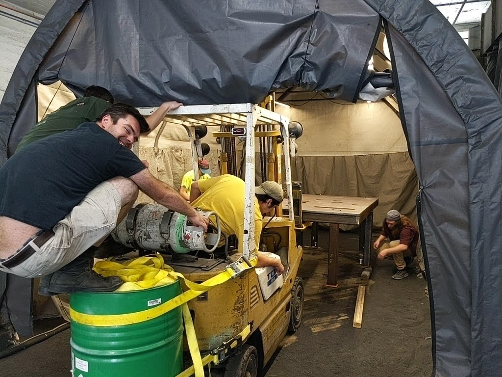

Upgrading a 50-year-old Industrial Bandsaw to the Digital Age
For my Masters project, I worked on remodeling a 50-year-old industrial bandsaw by adding computer control and data analytics to the machine for operational improvements.


The bandsaw was owned and operated by The Factory Amsterdam, an RPI Startup in the manufacturing industry.
The Invent @ Rensselaer Startup Immersion Program worked with the RPI SMIC (Smart Manufacturing Innovation Center) to develop a project that was sponsored by CESMII because of its integration of the CESMII Smart Manufacturing Innovation Platform (SMIP) into the operations of a small manufacturer, a fundamental part of CESMII’s smart manufacturing initiatives. The SMIP is a data historian and visualization application that allows for data producers such as industrial machinery to connect to it via standardized communication protocols, manage their data, and visualize data insights.

The goal of the project was to make the bandsaw machine more reliable when used and to reduce downtime when maintenance was inevitably needed. I worked on the project in Amsterdam, NY in an old industrial building.
With a great view of the town and the Mohawk River.
I worked alongside seven of my peers in an old factory building, working towards the same goal of becoming an independent manufacturing enterprise that would allow everyone to sync their interests with work that would benefit the company.
But while they worked solely for the benefit of the company, my project over the summer of 2022 had a growing list of deliverables that needed to be achieved for several different parties. Dr. Ghosh, as my Coterm advisor, expected my work to involve operational methods that he taught us in the Inventors Studio courses. Craig Dory, the director of the Regional CESMII group and the financial sponsor of the project, expected smart manufacturing developments that would benefit the small manufacturer I was working with, a long sought after yet rarely achieved goal in the Smart Manufacturing community. TFA, as the owners of the machine, expected an improved machine with better reliability and improved operational capabilities. RTA, a smaller sponsor of the project who provided an industrial protocol device for the project, expected an industrial networking article discussing the accomplishments of the project (linked below).
RTA ArticleSo, there were a lot of deliverables to juggle as the project progressed. I began with no knowledge of PLCs (programmable logic controllers), industrial communication, or how to work with industrial machinery. Over the course of two summers and intermittent work over the school year, I was able to install the PLC onto the machine, rewiring all the electrical logic and signals of the machine through the PLC, and maintain the operational logic of the machine.

This process seemed daunting at first, but every milestone and challenge was overcome through persistence and collaboration with my peers. The project demanded a lot of independent study and discovery, so it was very helpful to have peers around me to consult when I encountered difficult challenges. It was also helpful that I had experience working with industrial machinery in the MPS I and II classes. The Inventors Studio course also helped me grasp a higher-level understanding of the effect of my project on the operations of the company and demonstrate my projects impact to interested parties. In addition, I took the Multidisciplinary Capstone Design course last year and was placed in the Smart Manufacturing project group. This gave me a head start in understanding key smart manufacturing concepts and gave me preliminary experience working with the SMIP system that I utilized during my project.
One interesting side project was collecting band speed measurements from the machine. The machine had a gauge that showed its band speed, but since it served no purpose in the logic of the machine its circuit was localized to the user control box. After some investigation, I found that the gauge was an electric gauge that was calibrated to a DC voltage value. A tachogenerator was used to convert the rotation of the band wheel that drove the saw of the machine to an AC voltage. This was connected to a rectifier circuit in the user control box to convert to a DC voltage that was then displayed as a band speed in FPM (feet per minute) on the display gauge. In order to collect this data, I purchased an analog input module that could read DC voltage at the appropriate range. I then rewired the rectifier circuit inside the PLC electrical box and connected the analog module to collect the DC signal. Afterwards, the signal was calibrated on the software side to display an accurate band speed.
After I rewired the machine to PLC logic, I began working on integrating the machine to the SMIP. This process also had its challenges as the IT/OT gap is notoriously difficult to bridge. After failing to integrate a module that was purchased from Italy, I contacted John Rinaldi, the founder and CEO of RTA, an industrial communications expert. They agreed to provide an appropriate protocol gateway pro bono for my project. This protocol gateway converted serial signals that the PLC would send out to data objects that followed the standardized language model that the SMIP used, OPC-UA.
This allowed for the signals from the bandsaw machine to be modelled as structured data on the SMIP. A novel data model using a UML diagram and a Fishbone diagram was developed to describe the operational functionality of the saw. A data connection was also successfully achieved between the machine and the SMIP, and preliminary data was sent through before The Factory Amsterdam had to go through an extended process of moving to a new facility.

Although the projects deliverables were cut short because of the move, future work can be performed to actualize more results from the project. Future projects include developing a dashboard to interact with the machines operator and show important attributes to the operator, installing a current transducer to measure power consumption of the machine, and exploring cut quality and developing a predictive maintenance schedule for the machine using acoustic sensor data. The project did have some meaningful results. The machine has become easier to maintain with a well documented SOP and the PLC software that makes debugging issues a lot easier. Also, the machine is now in a state where it has a much greater potential for future research and improvements. Furthermore, the machine now has a greater capacity for operational optimization and the diagram below shows the difference in cut quality after the machine’s parameters are optimized for the particular stock that is being cut. This demonstration shows how important it is for the machines operator to be able to capture optimal parameters for repeatable future results. This task can only be actualized as a result of the manufacturing and smart manufacturing improvements made to the machine through this project.

The effect above can be achieved by developing an understanding of the effect of various machine attributes on the operational parameters of the machine. These effects are summarized in the process control table, which shows how various collected machine attributes can affect the operational parameters of the machine.

After working on this project, I feel confident that I can take on any engineering challenge. This project taught me about how to learn independently, when and how to ask others for help, and it reaffirmed my own abilities and what I’m capable of doing. It also helped me understand my own interests and what I’d like to work on in the future. RPI overall has given me a great foundation to pursue a career in manufacturing. The experience I gained from the manufacturing classes at RPI such as MPS I and II, IS 2 and 3, AMPs, Analysis of Manufacturing Processes, etc.. have given me a great understanding of the manufacturing field and have equipped me to tackle any engineering challenges that I will encounter during my career. Furthermore, this project has given me invaluable experience working on industrial machinery and provided an immersive understanding of smart manufacturing applications and the world of the manufacturing industry.
Here I show a video tour of the bandsaw and my associated project:
Bandsaw Video TourAnd a video of the saw in operation:
Bandsaw Sample CutContact Me
Email (preferred contact method): michael.aksen@gmail.com
Phone #: 201-982-1776